Swing weight and twist weight, measured by us.
Published specs tell you length and width. How heavy a paddle swings, and how stable it is on off-center hits, we measure ourselves. 11 paddles so far.
Swing weight
How heavy the paddle feels when you swing it. Higher means more plow-through and power, but slower hands. Ours range from 110 to 124.
Twist weight
How much the paddle resists twisting on off-center hits. Higher means a bigger, more stable sweet spot. Ours range from 6.01 to 6.34.
Static weight
What the paddle weighs on a scale. Two paddles with the same static weight can swing very differently.
All measured paddles
Swing, twist and static weight measured by Pickleball RX. Click a column to sort. Other specs are published by the brand or a retailer and may differ from your paddle; * marks ones we measured ourselves. Disclaimers.
| Labs | |||||||||
|---|---|---|---|---|---|---|---|---|---|
| Luzz Cannon XPP M1 16mm | 124 | 6.04 | 8.01 oz | 16.54″ | 7.48″ | 16 mm | 5.52″ | Elongated | X-ray Spin Grit |
| Sypik Triton 5 Ultimate Pro 16mm | 121 | 6.28 | 8.09 oz | 16.5″ | 7.4″ | 16 mm | 5.55″ | Elongated | X-ray Grit |
| Arronax Boost-1 16mm Upgraded Grit | 121 | 6.24 | 7.92 oz | 16.38″ | 7.32″ | 16 mm * | 5.71″ | Elongated | Spin Grit |
| Bread & Butter Loco Elongated 16mm | 120 | 6.21 | 7.87 oz | 16.5″ * | 7.5″ * | 16 mm | 5.5″ | Elongated | Spin Grit |
| Proton Project Coyote 15mm | 119 | 6.10 | 7.70 oz | 16.5″ | 7.5″ | 15 mm | 5.5″ | Elongated | X-ray Grit |
| RPM Jade 16mm | 118 | 6.01 | 7.76 oz | 16.5″ | 7.5″ | 16 mm | 5.5″ | Elongated | X-ray Spin Grit |
| Pickle Poppers Pop N Rush Elongated 16mm | 118 | 6.30 | 8.00 oz | 16.45″ | 7.48″ | 16 mm | 5.7″ | Elongated | X-ray Spin Grit |
| CPX Hyper+ 16mm | 117 | 6.34 | 8.02 oz | 16.54″ | 7.48″ | 16 mm | 5.5″ | Elongated | X-ray Grit |
| Gearbox Pressure X 8E Hybrid 16mm | 112 | 6.18 | 7.70 oz | 16.2″ | 7.8″ | 16 mm | 5.65″ | Hybrid | X-ray Spin Grit |
| Gearbox Pressure X 8M Hybrid 16mm | 111 | 6.15 | 7.70 oz | 16.2″ | 7.8″ | 16 mm | 5.65″ | Hybrid | X-ray Spin |
| Luzz Glider 2026 Hybrid 16mm | 110 | 6.19 | 7.95 oz | 16.34″ | 7.68″ | 16 mm | 5.31″ | Hybrid | X-ray Grit |
Head to head
Proton Project Coyote vs Sypik Triton 5 Ultimate Pro.

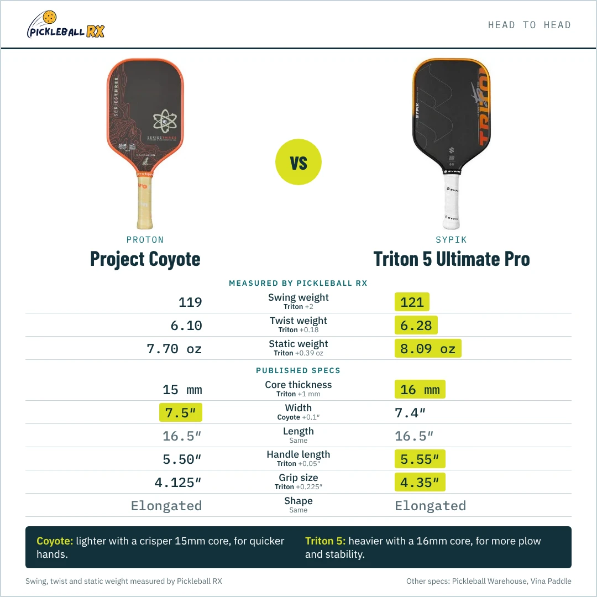
Spec cards
One card per paddle. Tap a card to open it full size.

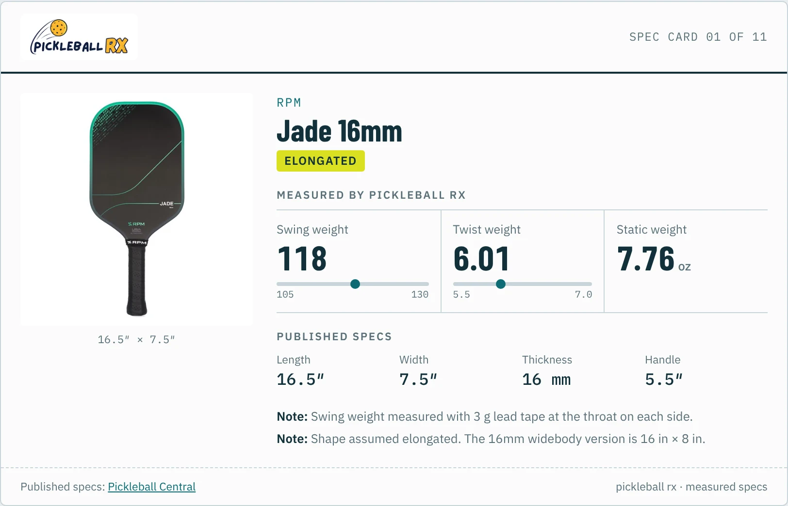
- Swing weight measured with 3 g lead tape at the throat on each side.
- Shape assumed elongated. The 16mm widebody version is 16 in × 8 in.

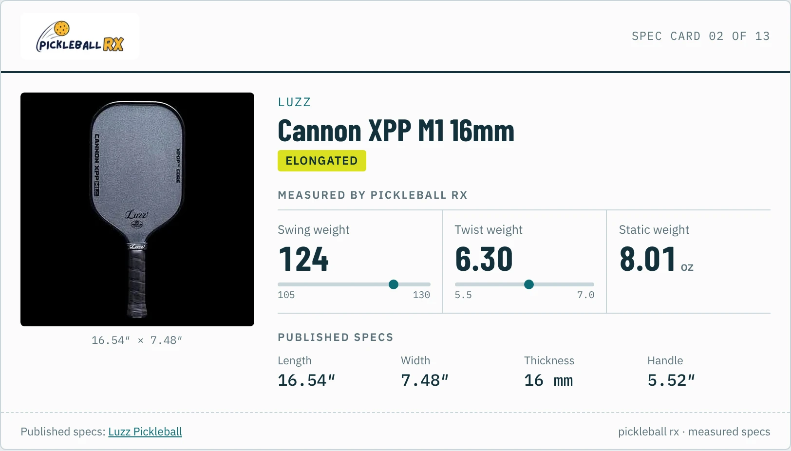

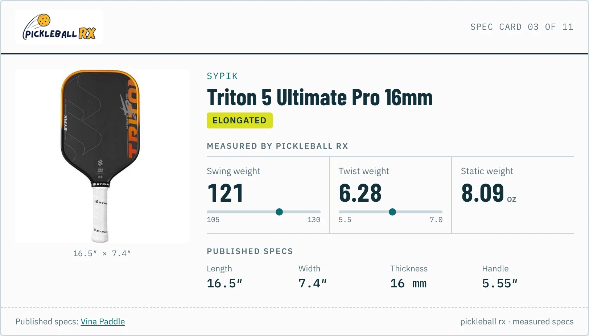

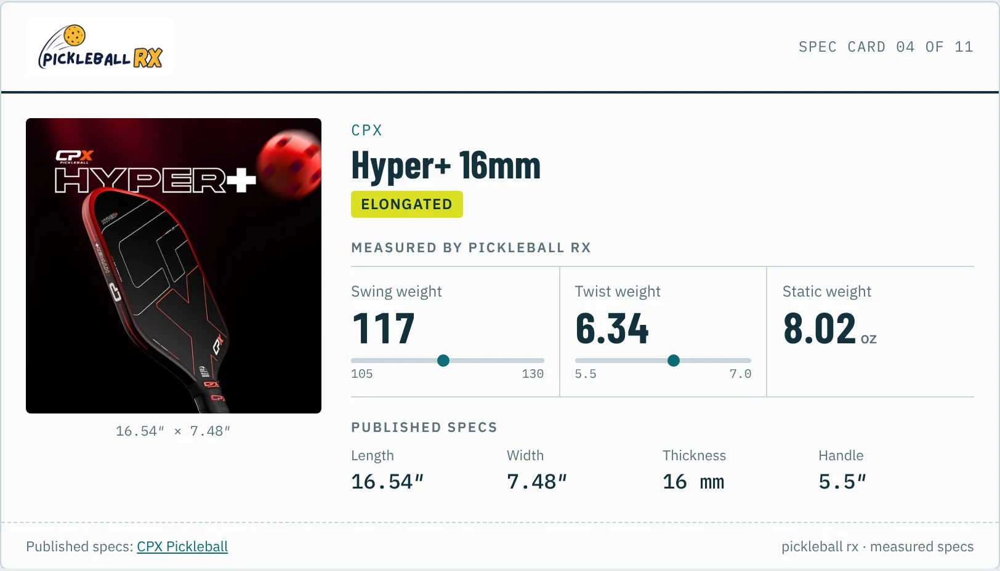

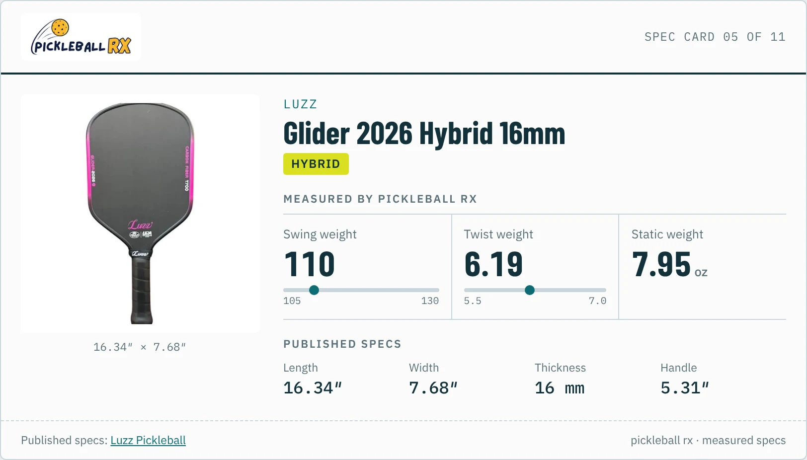

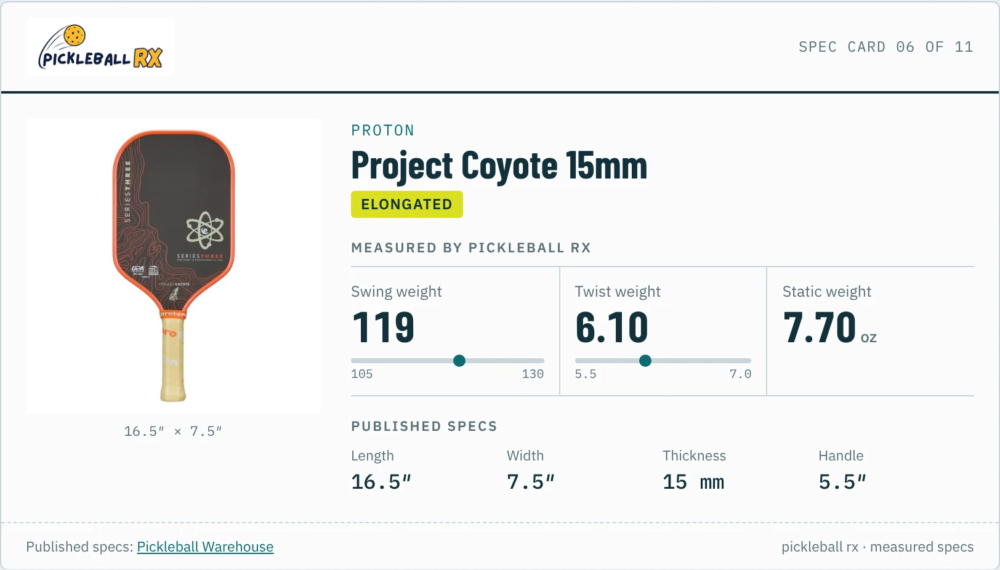

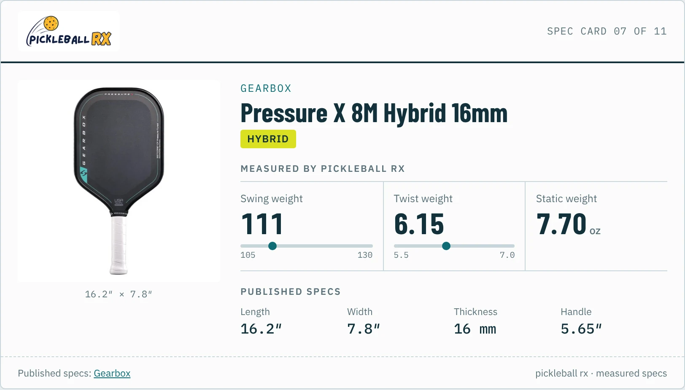

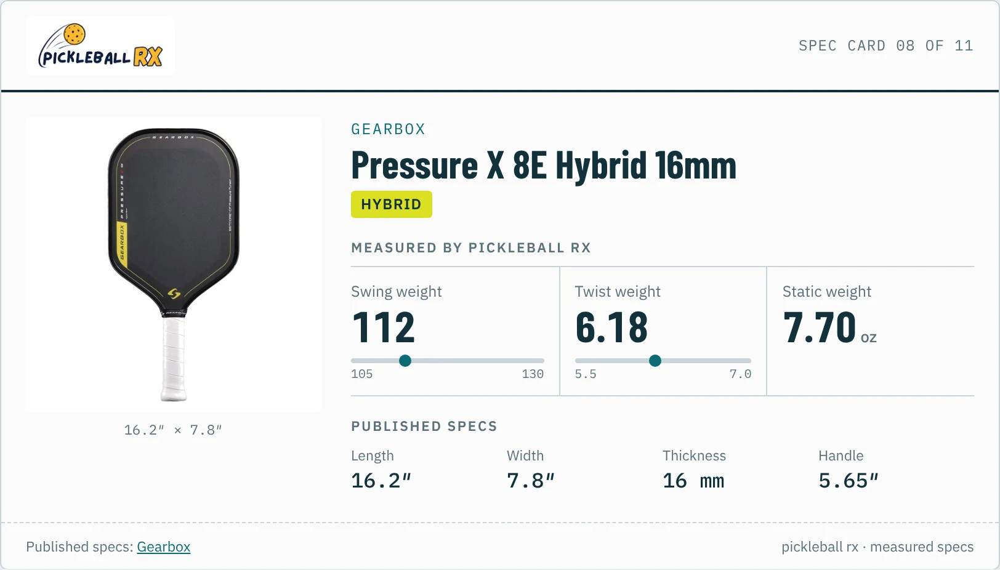

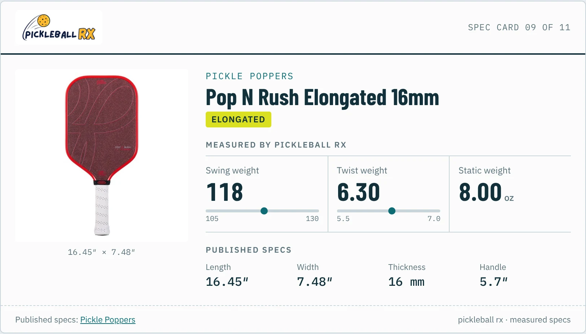

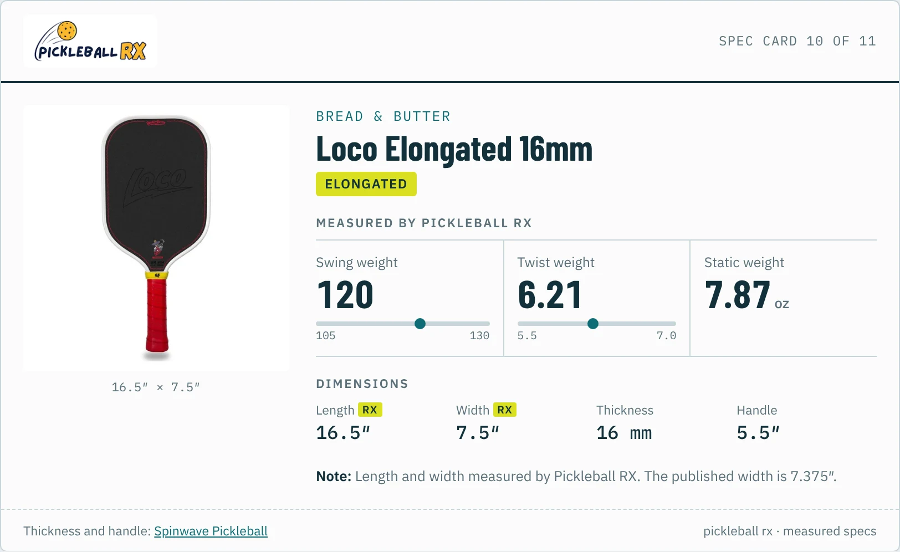
- Length and width measured by Pickleball RX. The published width is 7.375″.

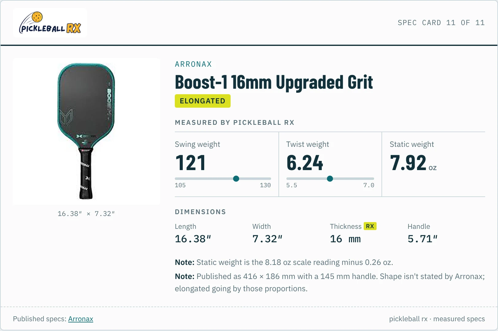
- Static weight is the 8.18 oz scale reading minus 0.26 oz.
- Published as 416 × 186 mm with a 145 mm handle. Shape isn't stated by Arronax; elongated going by those proportions.